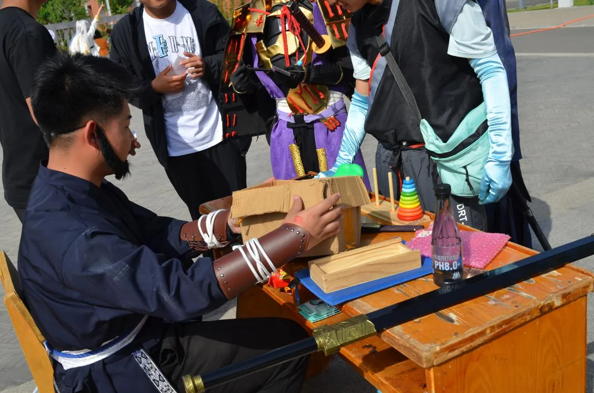

01 / 05 · 2025.04.26
次元跃动 · 青春集结
「这是很多同学第一次在校园里，看到成规模的二次元现场。」

- 时间
- 2025 年 4 月 26 日 8:00—18:00
- 地点
- 学校操场
- 主办
- 花忆动漫社
- 协办
- 心理健康研究教育者协会、电子竞技协会
- 对象
- 全校师生
- 规模
- 校内外师生 300 余人
那天发生了什么
同人作品展销、Cosplay 自由行、宅舞接力、原创手作市集，四个板块同时在操场铺开。Coser 展示与摄影创作同步进行，社团联动游戏与舞台表演把现场串成一条线。活动照片与视频后来发在 B 站、抖音，累计播放数万次。
暴露的问题
- 现场部分区域人流量过大，出现短暂拥堵，疏散不够及时——前期对人流预估不足。
- 个别社团游戏环节准备不充分，物资不齐、规则解释不清，影响体验。
- 活动前期跨部门沟通不畅，场地临时更换，最后一天才得知。
下次怎么改
- 提前规划疏散路线，设置明显指示标识，安排专人引导。
- 做高峰人流预案，按区域预估承载量。
- 社团成员提前培训、物资提前到位、规则反复演练，并安排专人监督准备情况。
- 与学校相关部门建立长效沟通机制，明确对接人与协调会议节奏。